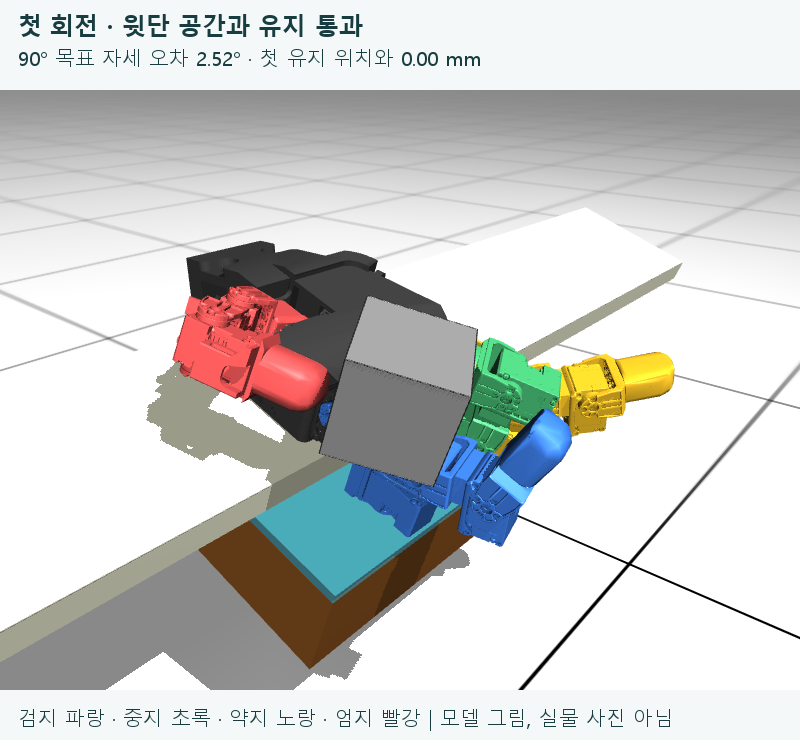
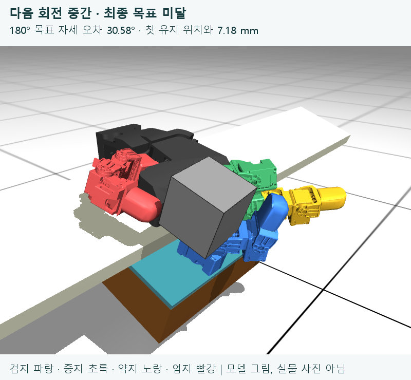
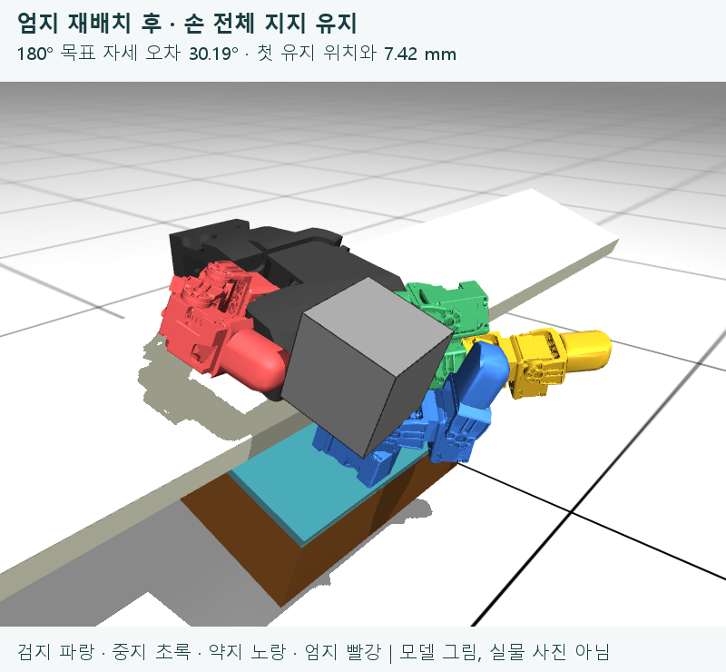
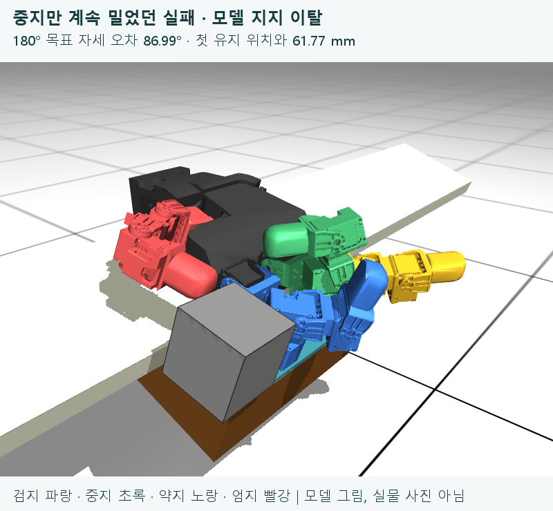
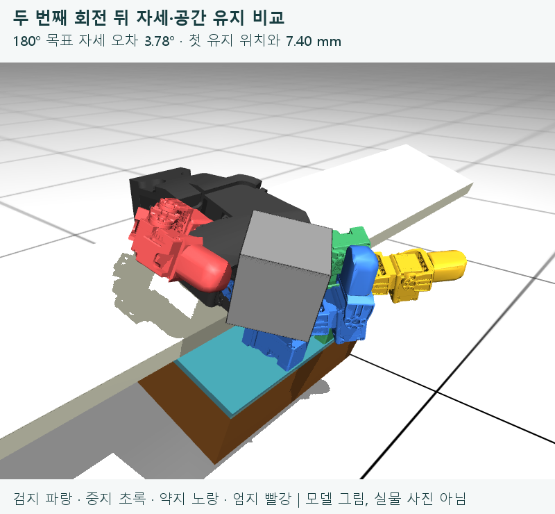

특정 손가락 접촉을 계속 유지하는 것은 필수조건이 아니다. 초기 배치부터 두 회전과 각 도달 위치의 유지까지 5089목표를 초기화 없이 재현했다. 도달 위치 유지 통과=True; 첫 위치2mm 복귀는 미달이다. 다음90도·최종 위치·공간과 전체 동작의 실물 준비는 아직 완료하지 않았다.
사용자 확인: 같은 중지·엄지 접촉을 계속 유지할 필요는 없다. 큐브의 지지를 손바닥·뿌리·마디·다른 손가락으로 넘길 수 있다. 기존 손 전체 지지와 관절·추종·충돌 검사는 유지한다. 특정 손가락 하중을 계속 요구한 검사는 한 비교 조건이며 전체 작업의 필수조건이 아니다.
과학적 모델 렌더이며 실물 사진에 정밀 등록한 그림은 아니다.





총 5089목표, 명목 모델 시간 381.675초를 처음 배치부터 초기화 없이 재현했다. 네 이음의 전체 저장 동역학 상태 차이0이다. 두 유지 구간의1ms 상태를 각각4050개 다시 검사했다. 도달한 각 위치에서 두 회전·윗단 공간·유지 통과=True. 두 번째 실제 추가 수평 회전 91.454도, 최종180도 오차 3.778도다. 첫 위치와 7.402mm 차이여서 같은 위치2mm 조건 통과=False. 정확한 모델 피드백으로 만든 경로의 명목 재생이며 SAC 학습/증류 완료, 실제 센서 제어 또는 실물 성공은 아니다.
전체 두 회전·두 유지 독립 재생미리 저장한 같은 경로를 세 변화 조건에서 다시 실행해 1/3조건이 두 유지 검사를 통과했다. 각 조건은 처음에 한 번만 바꾸고 이후 큐브를 초기화하지 않았다. 마찰은 측정값이 아닌 가정이며 세 조건만으로 일반적인 강건성이나 실물 준비를 인증하지 않는다.
검지의 지지면을 작은 범위에서 함께 옮긴 네 경로는 모두 손 전체 지지와 윗단 공간을4050상태 유지했다. 그러나 위치 차이는6.81~7.17mm로 남았고, 회전 자세까지 통과한 조건은 한 개뿐이었다. 단순히 받침을 이동하는 것만으로 기존2mm 복귀를 해결하지 못했다. 다른12개 지령은 그대로였고 기존 한계는 넓히지 않았다.
지지면 이동 네 비교추가 손가락 이동 없이4050개1ms 상태에서 손 전체 지지 100.0%, 윗단 인증 4050/4050, 최소 분리 하한 1.347mm를 확인했다. 최종 자세 오차 3.778도, 기울기 3.626도, 유지 중 위치 변화 0.144mm·자세 변화 0.099도다. 도달한 위치에서 회전·공간·유지 통과=True. 첫 유지 위치와 7.402mm 달라 기존2mm 위치 기준은 미달이다. 다른 손 자세로 되돌린 세 비교의 모델 접촉/물체 이동 실패도 보존했다. 같은 손가락 자세로 복귀하는 것은 필수조건이 아니다.
도달 위치 유지와 위치 복귀 비교첫 회전3405 → 다음 회전 중간376 → 중지 재배치201 → 새 접촉점 이동191 → 중지 보정500을 초기화 없이 재현했다. 다섯 이음에서 qpos/qvel/ctrl/act/qacc_warmstart 차이0, 전체1ms 상태의 손 전체 지지 비율 99.9889%, 두 번째 회전의 추가 수평 회전 61.960도다. 최종180도 자세 오차 30.582도, 첫 유지 위치와 7.184mm 차이로 아직 미완료다. 첫 유지4050상태의 공간 인증은 통과했지만 마지막 자세의 윗단 공간은 미인증이다. 음수 분리 하한을 실제 침투 깊이라고 해석하지 않는다.
전체4673목표 독립 재생 원본실제로 도달한 첫 회전 끝에서는 검지 계열 약 0.981N이 지지했고 중지·엄지 하중은0이었다. 이것도 손의 지지로 센다. 별도로 배치한 다음 회전 시작 파지는 중지·엄지 하중이 각각 1.441/1.458N이고 두 위치는 19.505mm 다르다. 후자의 하중 구성을 모든 경로에서 유지해야 한다는 뜻은 아니다.
실제 중간·끝 상태 비교총 3405목표: 기존 첫 회전3015 → 같은 위치에서 손 자세 변경336 → 유지54. 세 이음의 모든 저장 동역학 상태 차이가0이고 상태 재설정은 없다. 마지막4050개1ms 상태에서 손 전체 지지100%, 윗단 인증 하한 0.874mm,90도 오차 2.516도, 기존 도달 위치와 0.549mm 차이다. 옛 canonical 위치 미달 기록과 실물 미검증 상태는 유지한다.
3405목표 독립 재생검지 뿌리 ID8만 바꾸고 나머지15개 지령을 그대로 유지한 6조건 중 5조건이2250상태 중간 지지 검사를 통과했다. 일부 조건에서는 엄지가 새로 닿았다. 중간 기울기는 최종 유지 오차 통과로 세지 않는다.−18도 조건의80mm 이동 중단은 보존했다.
| ID8 변화 | 목표 수 | 손 전체 지지 | 90도 오차 | 중간 결과 |
|---|---|---|---|---|
| -18도 | 115 | 87.5% | 57.703도 | ['cube_translation_over80mm'] |
| -12도 | 99 | 100.0% | 13.250도 | 중간 지지 통과 |
| -6도 | 64 | 100.0% | 6.522도 | 중간 지지 통과 |
| +6도 | 64 | 100.0% | 6.420도 | 중간 지지 통과 |
| +12도 | 99 | 100.0% | 12.057도 | 중간 지지 통과 |
| +18도 | 133 | 100.0% | 18.056도 | 중간 지지 통과 |
2조건 중 2조건에서 다른 접촉을 얻은 후 검지 뿌리를 되돌리고4050상태의 손 전체 지지100%를 확인했다. 도중 접촉 획득은 단계 전환 신호다. 끝에서 엄지 하중이0이 되어도 손 전체가 받치면 지지로 센다. 이 결과는 중간 지지 전환이며 최종90도 자세·윗단 공간·다음90도 통과는 아니다. 정확한 모델 거리·힘을 쓴 교사이며 실제 센서 제어가 아니다.
접촉 전환 원본완료한 비교: 560목표, 90도 목표 오차 10.532도, 미리 정한 위치와 13.607mm 차이. 완료된 회전·유지로 세지 않는다. 손 전체 지지로 판정하며 특정 손가락의 지속 접촉은 강제하지 않았다.
모델 원본완료한 비교: 560목표, 90도 목표 오차 18.594도, 미리 정한 위치와 8.830mm 차이. 완료된 회전·유지로 세지 않는다. 손 전체 지지로 판정하며 특정 손가락의 지속 접촉은 강제하지 않았다.
모델 원본완료한 비교: 280목표, 90도 목표 오차 25.836도, 미리 정한 위치와 4.193mm 차이. 완료된 회전·유지로 세지 않는다. 특정 중지·엄지 접촉을 유지한 제한적 비교이며 전체 작업 필수조건이 아니다.
모델 원본완료한 비교: 640목표, 180도 목표 오차 43.652도, 미리 정한 위치와 6.412mm 차이. 완료된 회전·유지로 세지 않는다. 손 전체 지지로 판정하며 특정 손가락의 지속 접촉은 강제하지 않았다.
모델 원본완료한 비교: 480목표, 180도 목표 오차 85.584도, 미리 정한 위치와 1.724mm 차이. 완료된 회전·유지로 세지 않는다. 손 전체 지지로 판정하며 특정 손가락의 지속 접촉은 강제하지 않았다.
모델 원본다음 회전 중간의 중지 여섯 재배치가 모두 손 전체 지지를 유지했다. 다른12개 지령은 그대로였고2250개 상태의 지지100%, 큐브 변화는0.22mm·0.22도 미만이었다. 중지 PIP 여유는 약20~51도로 늘었다. 손가락 접촉 고정 때문에 막힌 것으로 처리하지 않는다.
중지 재배치 여섯 조건새 접촉점에서500목표를 보정해 15.231도 더 진행했다. 압박 설정 세 개는 실행 속도 제한 때문에 동일한 지령 경로를 만들었으며 독립된 세 성공으로 세지 않는다. 이를753목표로 연장한 비교는 앞500목표와 모든 저장 상태가 정확히 같았다. 오차가 한때 19.847도까지 줄었지만 이후 큐브가 옆으로 밀려 원래80mm 이동 중단 기준에 걸렸다. 이19.8도는 안정된 최종 결과가 아니다. 물체 이동 실패이며 실제 로봇 낙하 기록이나 모터 고장은 아니다.
500목표 보정 · 연장 실패와500목표 일치 근거엄지 후보까지 실제 자유 물체를 움직이는 여섯 조건 중 3조건은4050상태의 손 전체 지지100%를 유지했다. 다른 세 경로는80mm 이동에서 중단됐으며 실패를 보존했다. 약지 끝으로 네 면에 양의 회전 지렛팔 접촉을 찾은 제한적 탐색에서는 후보0개였다. 손가락 마디 접촉, 다른 큐브 위치, 다른 중간 경로까지 불가능하다는 뜻은 아니다. 정적 IK에서만 큐브를 고정했고 동적 경로의 큐브는 자유 물체다.
엄지 동적 이동 · 약지의 제한된 정적 탐색완료한 모델 검사: 240목표,180도 자세 오차 3.852도, 첫 유지 위치와 7.523mm 차이. 작은 자세 오차만으로 최종 공간·지지·위치·다음 회전 완료를 판정하지 않는다.
위치와 회전 보정 원본초기 배치부터 연결 검증한 같은 출발 상태에서 원본108차원 actor를 두 이력 방식으로 비교했다. 93목표, 91목표에서 모델 접촉 기준으로 중단됐고 다음90도·유지는 통과하지 않았다. 정책 가중치는 바꾸지 않았고 새 SAC 학습은0스텝이다. 현재 모델의 완전한 큐브 관측을 가정한 결과이며 정책 전체가 쓸모없다는 증명은 아니다.
정책 재사용 원본같은 위치의 손 자세 변경과 첫90도 유지는 통과했다. 그 뒤 저장 경로를 거꾸로 재생하는 비교는 다음 방향을90→0도로 명시했으며 모델 접촉 기준에서 중단됐다. 같은 방향의 두90도나 전체 성공으로 세지 않는다.
방향이 명시된 실패 원본범위·출처 해시 · 인계 상태 · 미세 모델 겹침 그림